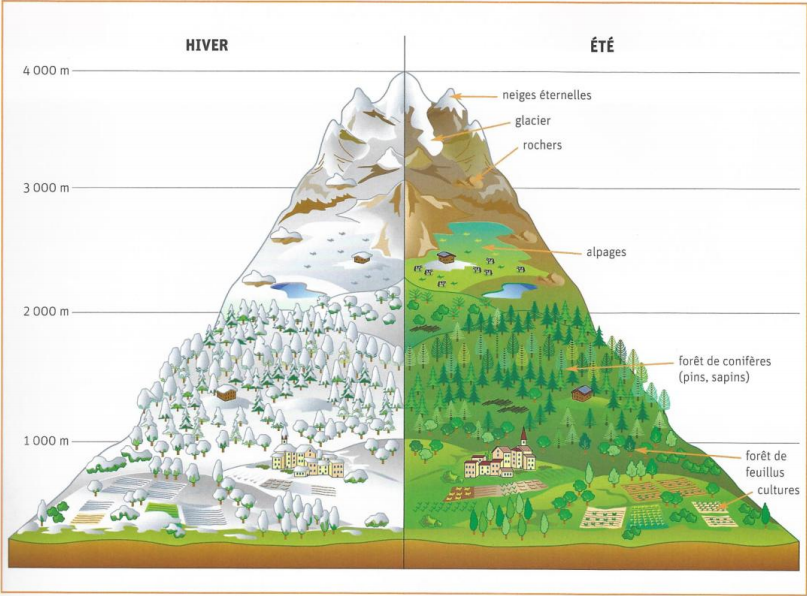
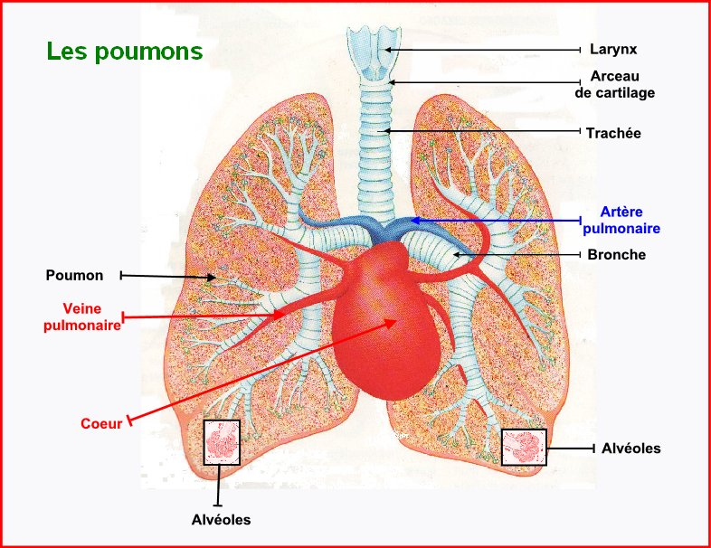
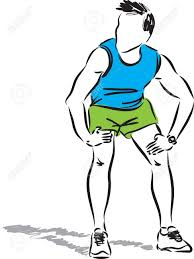
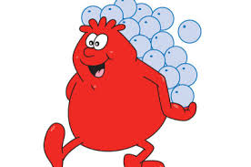

il y a baisse d'altitude a partir de 1000m. Puis a partir de 1600m d'altitude la vo2max d'un sportif baisse de environ 1% tout les 100 mètres d'ascension.

le cœur doit donc battre plus vite pour transporter plus de sang dans les poumons car la respiration s’accélère aussi et que les muscles est assez d’oxygène.

les poumons absorbes alors l'oxygène et le font passer dans les alvéoles qui elle même le font passer dans le sang.

se phénomène provoque un essoufflement du sportif.

comme en altitude il y a moins d'oxygène dans l'air le fait d'y faire du sport fabrique plus de globules rouges.